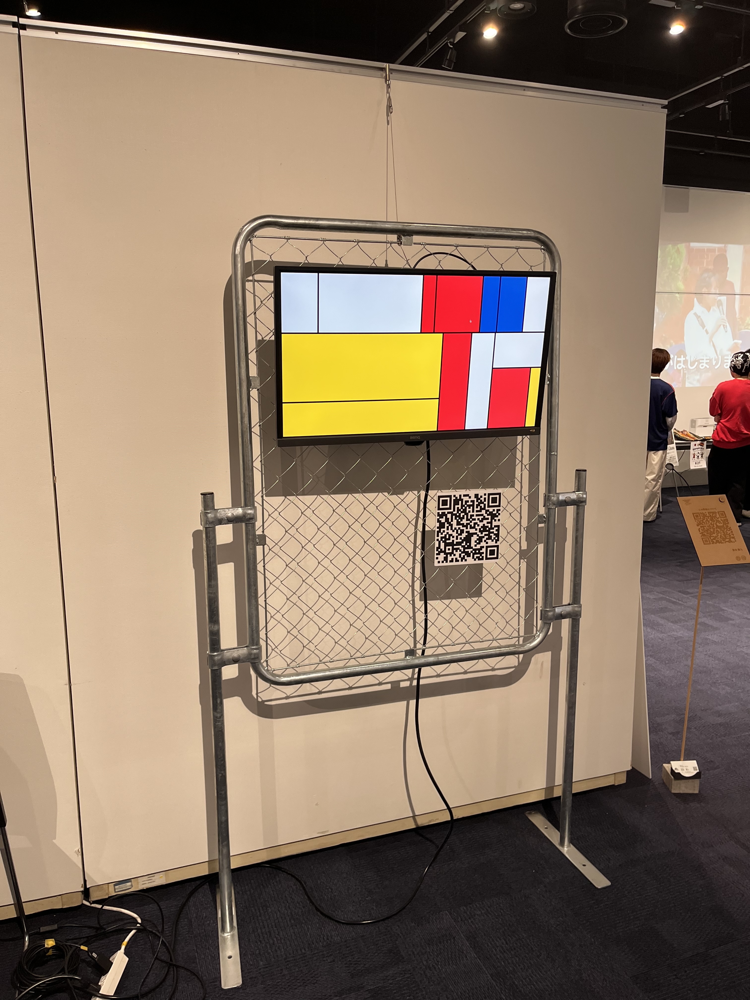
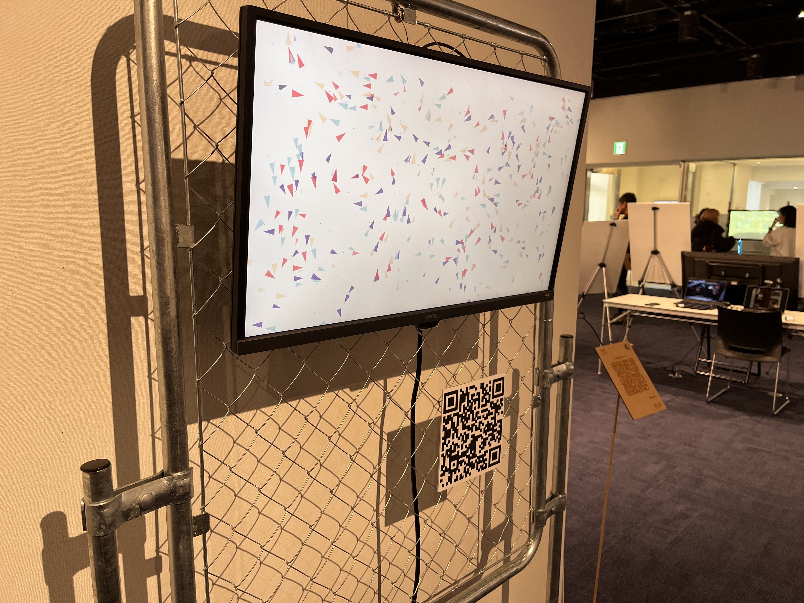

AI and Creation
- Processing
- p5.js
- ChatGPT 5.2
- Web Caption
- QR Code
- Algorithmic Visual
This media art piece reconsiders the relationship between AI and human creativity through a generative video work and branching captions.
After watching the video, visitors scan a QR code placed in the exhibition space and access captions about the work. The same video is described in two different ways: as a work made by a human and as a work made by AI.
By reading one explanation that emphasizes human craft, affection, and passion, and another that emphasizes the creative possibilities of AI, visitors experience how information about authorship can change the way a work is seen and evaluated.
In the end, the work reveals that it was created through collaboration between AI and the artist. Rather than simply asking whether the creator is human or AI, the piece lets viewers experience that opposition itself and asks where authorship, creativity, and artistic value reside.
The video is a program-based generative visual made with Processing and p5.js. During production, generative AI was used to explore concepts, visual ideas, algorithms, code, and parameters, while the artist selected, edited, and integrated those outputs into the final expression.
The work treats AI neither as a mere tool nor as a complete creative subject. Through shifts in the viewer's interpretation, it presents the possibility of human and AI co-creation.




